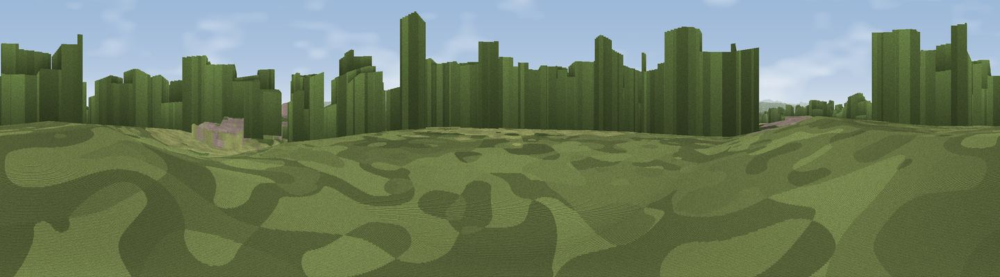

Eccleston Hill
#38819 in England · top 90% of its area beats it · near EcclestonWhere it is
The exact computed spot (SJ 40899 62392). Click the marker for map links.
The view, rendered

A 360° render of this exact spot computed from the terrain model, tree cover and land cover — summer colours, afternoon light, calibrated against photographs of famous viewpoints. Real trees, hedges and buildings will differ in detail.
The panorama
Grey silhouette: terrain skyline in each direction (720 bearings, Earth curvature and refraction included). Dashed green: skyline with trees (+15 m) and buildings (+8 m) as obstacles. Blue strip: how far the ground is visible on each bearing.
Where the view opens
Wedge length = distance to the farthest visible ground on that bearing (vegetation-aware). Rings at 10, 25 and 50 km.
What fills the view
50% grassland · 26% woodland · 15% cropland · 8% built-up
Angular shares of the visible panorama (visual magnitude), not map area. Landscape diversity 0.52 (0–1 Shannon).
Key numbers
More beautiful places nearby
The staircase of upgrades: each row has a higher view potential than everything closer. Driving times are estimates from straight-line distance, calibrated against real road routing — check an actual route before setting out.
| Place | Direction | Drive | Score |
|---|---|---|---|
| Viewpoint near Stoak | NNE · 10 km | ~20 min | 47.6 |
| Viewpoint near Clutton | SE · 11 km | ~20 min | 65.8 |
| Viewpoint near Brown Knowl | SE · 12 km | ~22 min | 69.0 |
| Viewpoint near Harthill | SE · 12 km | ~23 min | 80.5 |
| Viewpoint near Halfway House | S · 50 km | ~71 min | 83.3 |
| Viewpoint near Little Wenlock | SSE · 58 km | ~80 min | 84.2 |
| The Wrekin | SSE · 58 km | ~81 min | 85.0 |
| Viewpoint near Little Wenlock | SSE · 59 km | ~81 min | 86.6 |
53.15536, -2.88527 · source: osm peak · position refined by local search. Computed location — check access rights before visiting.